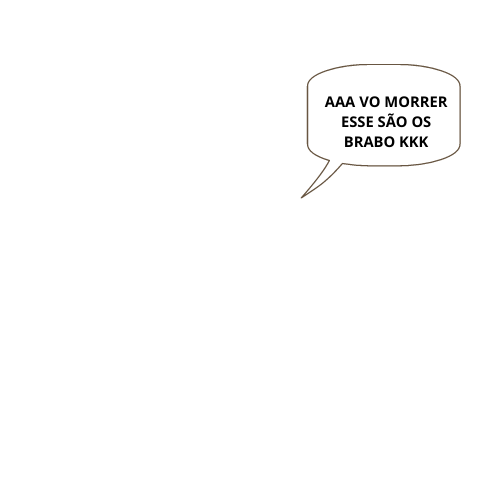
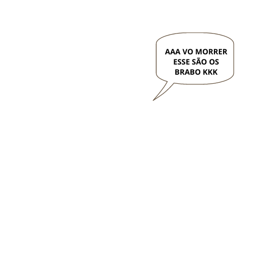

Jogabilidade

The Walking Dead é uma aventura gráfica, jogado a partir de uma perspectiva de terceira pessoa, com uma variedade de ângulos de câmera cinematográfica, em que o jogador, é o protagonista Lee Everett, trabalha com um grupo desorganizado de sobreviventes para se manter vivo no meio de um apocalipse zumbi. Algumas partes do jogo exigem respostas cronometradas a partir do jogador, muitas vezes levando a decisões importantes que terão impacto a historinha do jogo, na forma de role-playing games (RPGs). Algumas conversas exigem que o jogador faça uma escolha dentro de um tempo limitado, caso contrário, Lee vai permanecer em silêncio, o que pode afetar a forma como outros personagens respondem a ele. Ao contrário de outros RPGs, onde as escolhas caem em cada lado de um "bem ou mal" , as escolhas dentro de The Walking Dead tem resultados ambíguos, tendo um efeito sobre a atitude dos personagens NPCs (não-jogáveis) para com Lee. O jogador pode optar por ativar um recurso "notificação de escolha", no qual a interface do jogo indica que o personagem mudou sua opinião sobre Lee como resultado dessas escolhas. O jogador pode examinar e interagir com personagens e itens e deve fazer uso de itens de estoque e com o meio ambiente. Durante todo o jogo, o jogador é apresentado com a capacidade de interagir com os seus arredores, e as opções para determinar a natureza dessa interação. Por exemplo, o jogador pode ser capaz de olhar para um personagem ou falar com esse personagem, ou caso o jogador esteja carregando um item, oferecê-lo para outro personagem ou perguntar-lhes sobre isso. Em cenas de ação, o jogador deve executar certas ações em tempo rápido (QTEs), de modo a manter a si mesmo ou outros personagens vivos.
 
